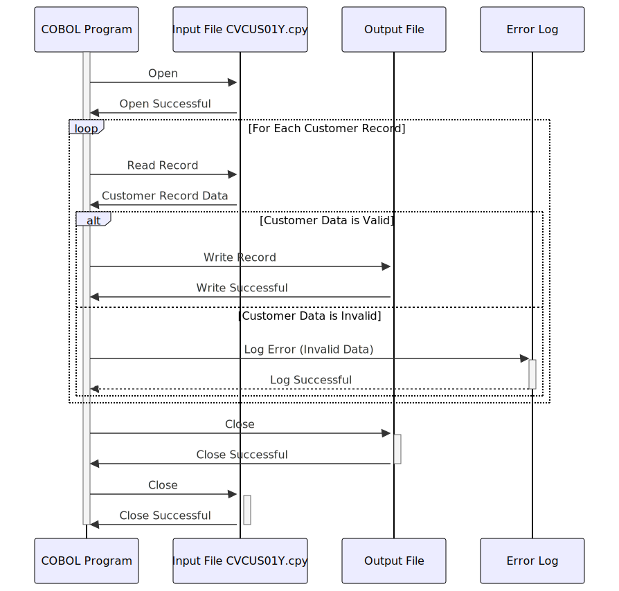

Gerado em: 1º de outubro de 2024
Título do Documento: Validação e Processamento de Dados do Cliente
Descrição Resumida: Este programa valida os dados do cliente de um arquivo de entrada, garantindo a integridade dos dados com base em regras predefinidas. Os registros válidos são gravados em um arquivo de saída, enquanto os registros inválidos são registrados para posterior revisão.
Histórias do Usuário: Como analista de dados, preciso de um processo confiável para garantir que apenas dados de clientes válidos e consistentes sejam usados para análise e geração de relatórios. Este programa ajuda a evitar que dados imprecisos distorçam os resultados da análise.
Épico Relacionado: 8 - Gestão de Dados do Cliente
Requisitos Técnicos:
Validação e Processamento de Dados do Cliente: Este programa lê os registros do cliente de um arquivo de entrada (CVCUS01Y.cpy), valida os dados em relação às regras predefinidas e grava os registros válidos em um arquivo de saída.
Entrada: Dados de registro do cliente do arquivo CVCUS01Y.cpy.
CUST-ID: Identificador único do cliente.CUST-FIRST-NAME: Primeiro nome do cliente.CUST-MIDDLE-NAME: Nome do meio do cliente (opcional).CUST-LAST-NAME: Sobrenome do cliente.CUST-ADDR-LINE-1, CUST-ADDR-LINE-2, CUST-ADDR-LINE-3: Linhas de endereço do cliente.CUST-ADDR-STATE-CD: Código do estado do cliente.CUST-ADDR-COUNTRY-CD: Código do país do cliente.CUST-ADDR-ZIP: Código postal do cliente.CUST-PHONE-NUM-1: Número de telefone principal do cliente.CUST-PHONE-NUM-2: Número de telefone secundário do cliente (opcional).CUST-SSN: Número de Seguro Social do cliente.CUST-GOVT-ISSUED-ID: Outra identificação emitida pelo governo (opcional).CUST-DOB-YYYY-MM-DD: Data de nascimento do cliente.CUST-EFT-ACCOUNT-ID: ID da conta de Transferência Eletrônica de Fundos do cliente.CUST-PRI-CARD-HOLDER-IND: Indicador de status de titular do cartão principal.CUST-FICO-CREDIT-SCORE: Pontuação de crédito FICO do cliente.Processamento:
CUST-ID seja exclusivo.CUST-FICO-CREDIT-SCORE está dentro do intervalo aceitável (por exemplo, 300-850).CUST-ADDR-STATE-CD e CUST-ADDR-COUNTRY-CD são códigos válidos.CUST-DOB-YYYY-MM-DD siga o formato AAAA-MM-DD.CUST-ID e o campo inválido.Saída:
Modelos Relacionados:
CUSTOMER-RECORD: Representa uma entidade de cliente.
CUST-ID Numérico: Identificador numérico exclusivo para o cliente.CUST-FIRST-NAME Texto: Primeiro nome do cliente.CUST-MIDDLE-NAME Texto: Nome do meio do cliente (se aplicável).CUST-LAST-NAME Texto: Sobrenome do cliente.CUST-ADDR-LINE-1 Texto: Primeira linha do endereço do cliente.CUST-ADDR-LINE-2 Texto: Segunda linha do endereço do cliente (se aplicável).CUST-ADDR-LINE-3 Texto: Terceira linha do endereço do cliente (se aplicável).CUST-ADDR-STATE-CD Texto: Código do estado do cliente (por exemplo, CA, NY).CUST-ADDR-COUNTRY-CD Texto: Código do país do cliente (por exemplo, EUA, CAN).CUST-ADDR-ZIP Texto: Código postal do cliente.CUST-PHONE-NUM-1 Texto: Número de telefone principal do cliente.CUST-PHONE-NUM-2 Texto: Número de telefone secundário do cliente (se aplicável).CUST-SSN Numérico: Número de Seguro Social do cliente (sujeito a regulamentos de privacidade).CUST-GOVT-ISSUED-ID Texto: Outra identificação emitida pelo governo.CUST-DOB-YYYY-MM-DD Texto: Data de nascimento do cliente.CUST-EFT-ACCOUNT-ID Texto: Identificador da conta de transferência eletrônica de fundos do cliente (provavelmente vinculado a um sistema bancário).CUST-PRI-CARD-HOLDER-IND Caractere Único: Indica se o cliente é o titular principal de um cartão.CUST-FICO-CREDIT-SCORE Numérico: Pontuação de crédito do cliente.Configurações:
INPUT-FILE-PATH: Caminho para o arquivo de dados do cliente de entrada (por exemplo, /data/in/CVCUS01Y.cpy).OUTPUT-FILE-PATH: Caminho para o arquivo de saída para registros de clientes válidos (por exemplo, /data/out/valid_customers.txt).ERROR-LOG-PATH: Caminho para o arquivo de log de erros (por exemplo, /logs/customer_validation_errors.log).CREDIT-SCORE-MIN: Pontuação de crédito mínima aceitável (por exemplo, 300).CREDIT-SCORE-MAX: Pontuação de crédito máxima aceitável (por exemplo, 850).Melhorias de Código:
Melhorias de Segurança:
Diagrama Conceitual:
–Made by “Smart Engineering” (by Compass.UOL)–